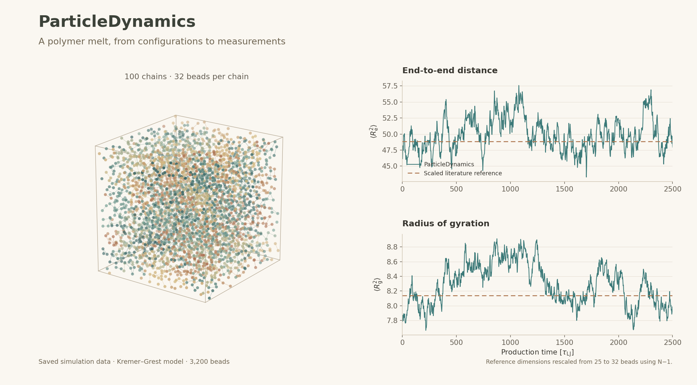

Examples
Choose a physical system, run the script, then adapt its forces, methods and measurements. Each example lives in the repository's examples/ directory.
Run an example
Use a checkout of the repository so the scripts and package version match:
git clone https://github.com/amirabbasi-physics/ParticleDynamics.jl.git
cd ParticleDynamics.jl
julia --project -e 'using Pkg; Pkg.instantiate()'Then run a script from the repository root. The examples require a working CUDA-capable NVIDIA GPU and write their output beside the scripts. Re-running a script can replace its previous output.
Fluids
A Lennard-Jones fluid in NVE
Follow a three-dimensional fluid without a thermostat. This is a useful starting point for checking total-energy conservation and choosing a timestep.
julia --project examples/3D_LJ_NVE.jlThe default system has 4,000 particles at reduced density 0.8. Initial velocities have zero centre-of-mass velocity and a prescribed kinetic temperature. The run writes traj3d_lj_nve.gsd and traj3d_lj_nve.log, including kinetic, potential and total energy.
For a short first run, keep the default system size and reduce the step count:
SIM_MAX_STEPS=1000 SIM_LOG_INTERVAL=100 julia --project examples/3D_LJ_NVE.jlRead the complete NVE script. Try halving SIM_DT and compare the total-energy fluctuations.
Brownian particles in 3D
Explore overdamped dynamics with WCA repulsion and thermal noise:
SIM_NPARTICLES=1000 SIM_MAX_STEPS=1000 julia --project examples/3D_BD.jlThis script uses Euler–Maruyama integration and writes obs3d_bd.csv and traj3d_bd.gsd. Its full default run uses 40,000 particles. In overdamped dynamics, focus on configurations, potential energy and transport rather than interpreting kinetic temperature as an inertial bath temperature.
Polymers
Start with bonded chains in 2D, then move to a 3D melt:
julia --project examples/2D_polymer_bonded.jl
julia --project examples/3D_polymer_melt.jlThese examples show how to supply connectivity through Topology and combine bonded and nonbonded forces. Read the bonded-interaction guide before changing bond parameters or the timestep.
| Script | Explore |
|---|---|
| 2D bonded polymer | Chain connectivity with FENE or harmonic bonds |
| 3D polymer melt | Many interacting chains in a periodic volume |
| Kremer–Grest showcase | A longer, specialized production and rendering recipe |

The showcase produces a 100-chain, 3,200-bead trajectory with chain dimensions and bond-length measurements. The figure above plots a saved configuration and recorded chain dimensions; the published 25-bead reference dimensions are rescaled to 32 beads using N−1. The rendering instructions explain how to turn a saved trajectory into a Fresnel movie. Rendering needs its own environment and is separate from running the simulation.
Active particles
An Ornstein–Uhlenbeck process supplies a force with a finite correlation time. The examples separate this active forcing from thermal white noise, so you can study each contribution to the motion.
| Example | Question to explore |
|---|---|
| Active Brownian particles | How does correlated forcing change interacting-particle motion? |
| Free-particle MSD | Where does persistent motion cross over to diffusion? |
| Active and thermal forcing | What changes when a thermal bath is added? |
| Multiple persistence times | How does a spectrum of correlation times affect displacement? |
julia --project examples/2D_active_OU_brownian_free_msd.jlUse the free-particle examples to establish a reference before adding interactions. See dynamics and observables for the corresponding workflow objects.
Driven mixtures
Give two particle types separate Langevin baths, then measure each group's thermodynamics and collision rates:
julia --project examples/TwoT_LJ2D_LD.jlRead the two-temperature script. For a single-temperature molecular-dynamics example with stochastic velocity rescaling, use SingleT_2D_MD_CSVR.jl.
Machine-learned potentials
The repository also contains separate MACE and Orb integrations with their own environments and model requirements:
- MACE examples and setup: silicon melt/quench and water structure.
- Orb examples and setup: benzene lattice energy and molecular dynamics.
Follow those setup instructions before running the scripts; they require additional dependencies beyond the core package.